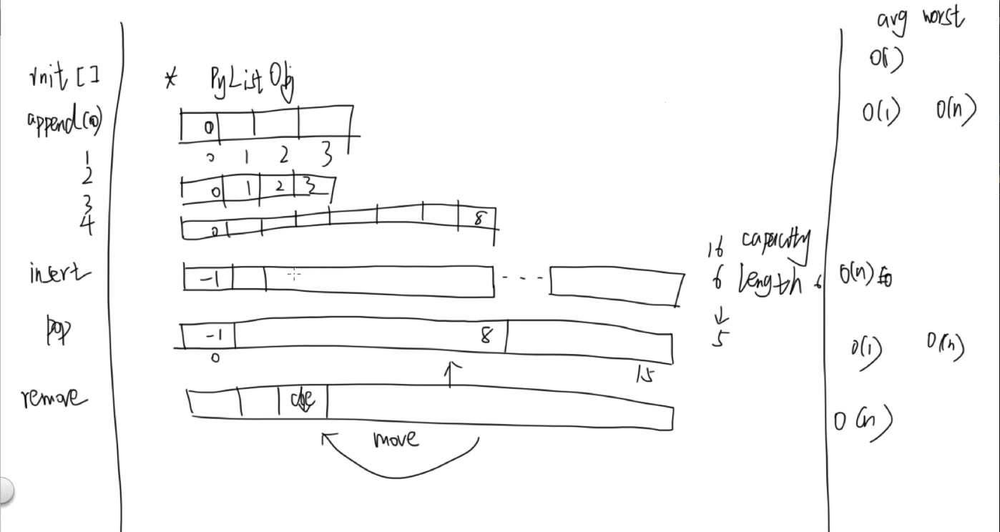

线性结构
本节我们从最简单和常用的线性结构开始，并结合 Python 语言本身内置的数据结构和其底层实现方式来讲解。 虽然本质上数据结构的思想是语言无关的，但是了解 Python 的实现方式有助于你避免一些坑。
我们会在代码中注释出操作的时间复杂度。
数组 array
数组是最常用到的一种线性结构，其实 python 内置了一个 array 模块，但是大部人甚至从来没用过它。 Python 的 array 是内存连续、存储的都是同一数据类型的结构，而且只能存数值和字符。
我建议你课下看下 array 的文档：https://docs.python.org/2/library/array.html
你可能很少会使用到它(我推荐你用 numpy.array)，我将在视频里简单介绍下它的使用和工作方式，最常用的还是接下来要说的 list， 本章最后我们会用 list 来实现一个固定长度、并且支持所有 Python 数据类型的数组 Array.
列表 list
如果你学过 C++，list 其实和 C++ STL（标准模板库）中的 vector 很类似，它可能是你的 Python 学习中使用最频繁的数据结构之一。 这里我们不再去自己实现 list，因为这是个 Python 提供的非常基础的数据类型，我会在视频中讲解它的工作方式和内存分配策略， 避免使用过程中碰到一些坑。当然如果你有毅力或者兴趣的了解底层是如何实现的，可以看看 cpython 解释器的具体实现。
| 操作 | 平均时间复杂度 |
|---|---|
| list[index] | O(1) |
| list.append | O(1) |
| list.insert | O(n) |
| list.pop(index), default last element | O(1) |
| list.remove | O(n) |

用 list 实现 Array ADT
讲完了 list 让我们来实现一个定长的数组 Array ADT，在其他一些语言中，内置的数组结构就是定长的。 这里我们会使用 list 作为 Array 的一个成员（代理）。具体请参考视频讲解和代码示例，后边我们会使用到这个 Array 类。
小问题
- 你知道线性结构的查找，删除，访问一个元素的平均时间复杂度吗？(后边我们会介绍这个概念，现在你可以简单地理解为一个操作需要的平均步骤)
- list 内存重新分配的时候为什么要有冗余？不会浪费空间吗？
- 当你频繁的pop list 的第一个元素的时候，会发生什么？如果需要频繁在两头增添元素，你知道更高效的数据结构吗？后边我们会讲到
延伸阅读
https://github.com/python/cpython/blob/master/Objects/listobject.c
勘误
视频里的 Array.clear 方法有误。应该是 for i in range(len(self._items))，已经在后续所有使用到 Array 的代码里修正